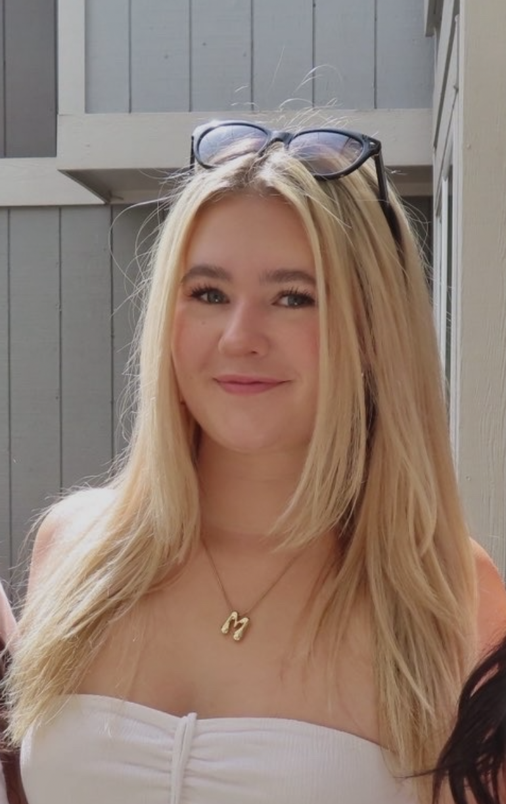

About Me

Hi, my name is Mathilde, but I go by Tilly. I am a Creative Technology and Design major at CU Boulder. I am interested in web design, UX/UI design, and creating digital and physical projects. I love doing arts and crafts, specifically bedazzling, painting, ceramics, weaving, and sketching.
I have a 3-year-old corgi named Winston, and he is the best dog ever; he is so silly and only barks when people sneeze. I am a senior pharmacy technician and have worked at Walgreens for almost three years. Although I don't have any interest in going into pharmacy, I love my job, and it's been great during college. I love music, specifically classic rock, psychedelic rock, prog rock, and glam rock. My favorite bands and artists are David Bowie, the Beatles, Pink Floyd, Genesis, Led Zeppelin, Roxy Music, and Bruce Springsteen. I love music so much because my dad is a musician, music producer, and huge record collector, and I learned everything from him!